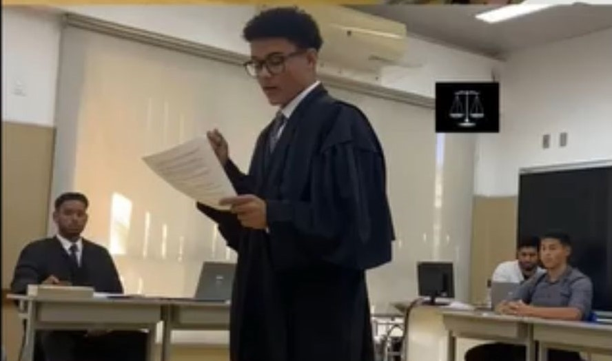
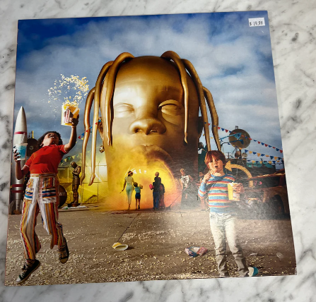

Meu nome é Brenno Henrique Pereira Aleixo, nascido na capital Vitória porém criado em Vila Velha, mais precisamente no bairro Araçás. Estudei por 9 anos na Fundação Bradesco e hoje estou cursando Sistema de Informação na Universidade Vila Velha. Minha história com os computadores e tecnologia se iniciou desde cedo, viciado no Playstation 2 desde os 3 anos, meu primeiro contato com computadores foi através de jogos online como Tank Online, Combat Arms Crossfire, Club Penguim e o grandioso CS 1.6.
Desde então meu contato com computadores foi ficando cada vez mais frequente e a minha vontade de aprender cada dia mais foi crescendo, quando eu ganhei meu primeiro notebook eu tive o primeiro contato com a programação através de jogos. Mesmo sem saber do que se tratava eu levei a diante, por se algo que eu tinha facilidade.
Meu objetivo de vida é ter uma vida financeira estabilizada, tendo a oportunidade de trabalhar e aproveitar meus momentos em familia sem me privar por conta de trabalho, a programação e cybersegurança são áreas que podem me proporcionar essas condições.
Montagem e manutenção de computadores, desing gráfico no Adobe Photoshop, edição de video e gestão de tráfego (tráfego pago).
Torcedor rubro-negro desde o berço, meu hobbys são (além de assistir ao maior do mundo): jogar videogame, ouvir música, assistir filmes, ir para a praia, jogar futebol e andar de bicicleta.
Escutar músicas faz parte do meu dia a dia, minha música favorita se chama Astrothunder do album Astroworld do Travis Scott, lançado em 2018. O motivo se dá por conta do significado da letra, que diz sobre buscar coisas melhores para nossas vidas, e também pela arquitetura sonora da música, onde foi feito um excelente trabalho na montagem desta obra. Me considero uma pessoa eclética, escuto desde o funk ao rock.
Astrothunder - Travis Scott no Youtube.